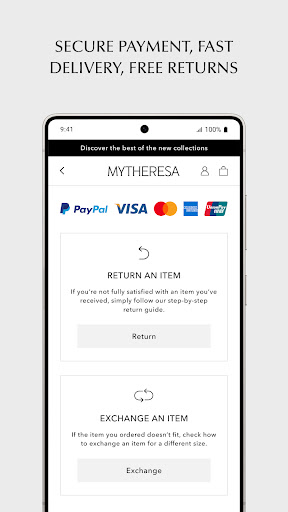

用了两年 Mytheresa 才挖到的 5 个隐藏设置，能省大几千
Mytheresa 不只是个奢侈品买手店那么简单——退税流程、品类偏好、退货红线、支付安全，这些藏在角落的设置里，每一个都可能帮你省掉冤枉钱或避过大坑。
你以为Mytheresa官网只是个"精选品牌买手店"，打开 APP 选款式下单就完事了（没装的话先去下载一个）？其实它藏着一堆官方 FAQ 角落里才写、首页永远不会主动推送的设置和规则——每一条都可能帮你省掉几百块的手续费，或者避免一个让订单全部打水漂的致命失误。
我前后翻了三个月的条款和设置页——后来去Mytheresa文档翻了一下才发现这些角落设置的写法太隐蔽，很多人根本注意不到——把这些真正"藏得深"的点整理出来。有些是能省大钱的退税技巧，有些是踩了就没后悔药的红线。不管你是刚入坑的新手还是已经买过好几单的老用户，看完这篇肯定能挖到一两个不知道的点。
隐藏设置一：非欧盟居民的退税机制，支持支付宝和微信
这是我最推荐优先记住的一条——如果你持非欧盟护照，且账单地址在欧盟之外，从 Mytheresa 寄往意大利、西班牙、德国、奥地利、比利时这五个国家的订单，可以走 Global Blue 退税流程，最高能退掉商品总价 20% 左右的增值税。
具体流程其实不复杂，但官方的写法藏得很隐蔽：下单后退税表格会自动发到邮箱，商品连同表格、发票带到欧盟境内任一机场海关盖章，盖章时要同时出示护照、发票和未使用的商品本体——原包装、带价签、不能剪吊牌。然后到 Global Blue 柜台办理退款，重点是它支持支付宝和微信，这点比多数退税渠道友好太多，不用专门准备境外信用卡。
但这里有一个九成用户没注意到的硬规则：护照、账单地址、收货地址上的姓名必须完全一致。差一个字母、一个拼写、甚至"中间名要不要写全"这种细节都可能导致退税被拒。如果你账单写的是护照上的全名但收货地址只写了姓氏，海关盖章的时候会卡在这一步。还有一个例外是 Life 家居类商品不参与退税，想买餐具和织物的朋友记得留个心眼。

隐藏设置二：品类偏好决定首页推荐逻辑，可以全选混排
第一次打开 APP 的时候会让你选 Shop women / men / kids / life 四条线——大多数人随便点一个就过去了。但这个 Preferences 页的选择会直接影响首页的默认推荐内容：你选了女装，首页就只推女装线的新品和编辑精选；选了男装就只推男装。
真正的隐藏玩法是：把偏好留空或者全选，首页会混排四条线的所有内容，适合那些不想被品类框死、喜欢到处逛的用户。这个设置藏在设置菜单最深处的 Preferences 选项里，改完之后首页的推荐逻辑立即重置，不会有任何推送提示告诉你"已更新"。四条线的来历也挺有意思——女装是主线，2019 年加了童装、2020 年加了男装、2022 年才上线 Life 家居，每条线的品牌池和更新节奏都不一样，男装线甚至有和 Zegna 的独家合作系列。
隐藏设置三：退货的防盗扣是绝对红线，剪了就没后悔药
官方写的"30 天免费退货"看起来很宽松——含打折商品、Final Sale 除外、无理由。但真正的红线藏在条款表格的最后一行：防盗扣（safety label）一旦拆除，退货直接拒收，商品原样退回，全额不退。
这个坑我差点踩了。收到一件外套，试穿后觉得款式不错，随手剪了防盗扣想挂衣柜里——还好第二天在设置页翻退货条款时看到这条，赶紧找回去把剪下来的防盗扣和原包装一起塞回了快递袋。如果真的寄出去，不仅退不了，连商品都会被原样寄回来，等于白扔了大几千。
除了防盗扣，退货还要求五个"保持原样"：未穿着、未洗涤、无瑕疵、标签未拆、原包装和配件齐全。试穿确认尺码不算使用痕迹，但出门穿过、有香水残留或妆容蹭污都会导致拒收。30 天的时限也是硬线，从收货日算起，追踪记录是唯一的时间凭证，超时一分钟都不受理。
隐藏设置四：快捷支付的加密托管，求快求稳可以自己选
很多奢侈品电商会默认保存支付信息让用户"下次结账免重填"，但 Mytheresa 把这个选择权完全交给用户——它的快速购买功能是"保存邮箱地址和付款信息"，支付信息以加密形式托管在服务器端。
这条设置藏在支付方式页面的一个不起眼的复选框里，勾选之后下次结账确实能省下不少时间，尤其是买高单价商品每次手动填卡号很烦。但我建议区分场景：私人常用手机上可以勾选省时间，公共设备或偶尔下单的手机上千万别勾。毕竟奢侈品订单金额普遍偏高，加密托管虽然安全系数够，但多一层信息存储就多一层潜在风险，这点取舍得自己拿。
隐藏设置五：编辑精选（Edits）是独立于新品推送的精品通道
首页的推荐流里混着两种内容——一种是约每周 900 款的常规新品，另一种是选货团队每周手写的"臻选系列（Edits）"。后者不是按上架时间排序的，而是买手团队从全球秀场和合作品牌里挑出来的主题化精选，比如"这个月最值得买的羊绒单品""秋冬必备的极简风配饰"这类专题。
大多数用户只会按时间顺序翻新品，却不知道 Edits 系列才是真正能挖到独家款的地方——有些合作系列只在 Edits 里出现，常规新品流里根本找不到入口。如果你的品类偏好设置了全选混排，首页会自动把 Edits 内容穿插在新品之间，但没注意到的话很容易刷过去。
一个坑要特别提醒：退税和退货的交叉问题
买了高单价商品（比如高级珠宝、认证二手腕表）又想走退税流程的朋友要注意：退税要求商品"未使用、原包装、带价签"，退货也有同样的要求。一旦你选择了退税，就等于默认这件商品不会再走退货流程——因为退税盖章时海关会在发票上做标记，之后再退货会让平台和 Global Blue 两边扯皮，最终大概率两边都不认。
所以高价单品下单前得想清楚：到底是想留着用（走退税省 20% 左右），还是想拿到手先看实物不合适就退（放弃退税走 30 天退货）。这两个通道你只能选一个，不能两头占。
收尾
Mytheresa 作为一个定位高端的买手店，很多规则写得太"官方腔"了，藏在 FAQ 表格的角落、设置页的最深处。但把这些隐藏设置翻出来的过程本身就是一种乐趣——发现退税支持支付宝微信的时候那种"原来还能这样"的惊喜感，比多省几百块钱更满足。
把它用透，别只停留在"选款式下单"的层面。每个平台都有自己的脾气和规则，挖到那些藏得深的点，才是真正的会买。